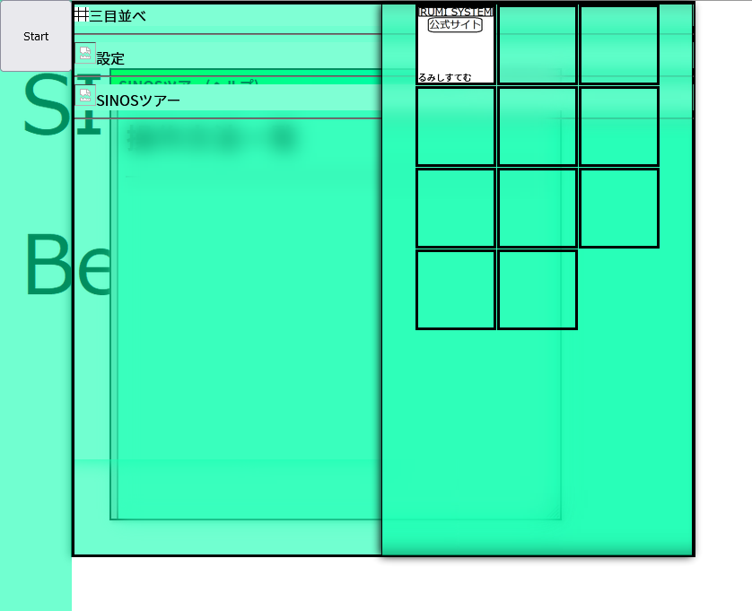
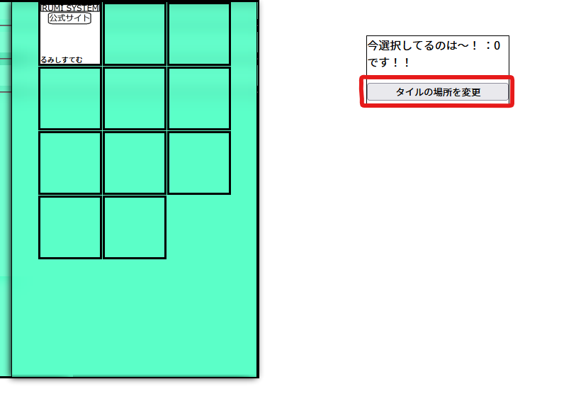

操作方法一覧
・タイル

「タイル」は、ユーザーが自由にカスタマイズできる第二のデスクトップです。
クリックすると、そのタイルに設定されている動作をします(大体はアプリの起動とか)
Ctrlキーを押しながらタイルをクリックすると、コンテキストメニューを表示します。

Ctrlキーを押しながらクリックし、コンテキストメニューを表示します。
そして、移動する先のタイルをクリックすると、タイルを移動できます(すでにタイルがある場所には移動できません。)